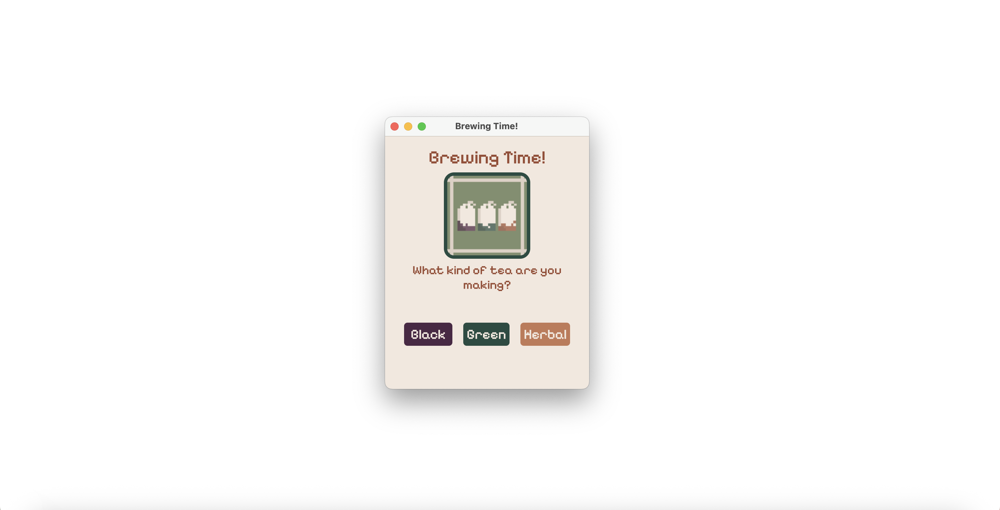
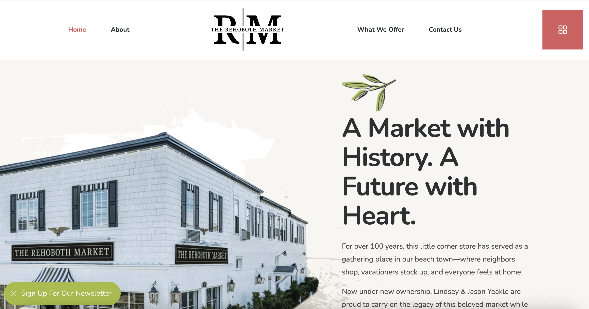
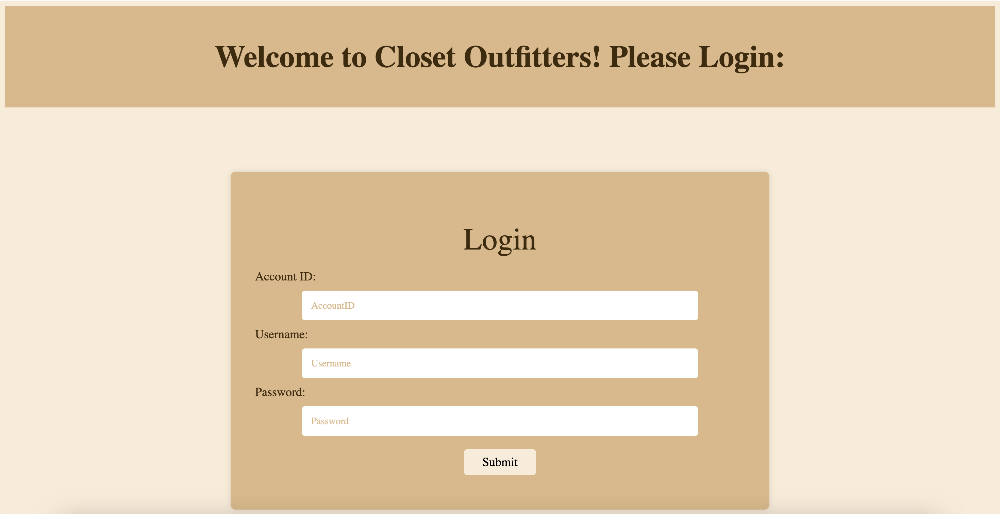
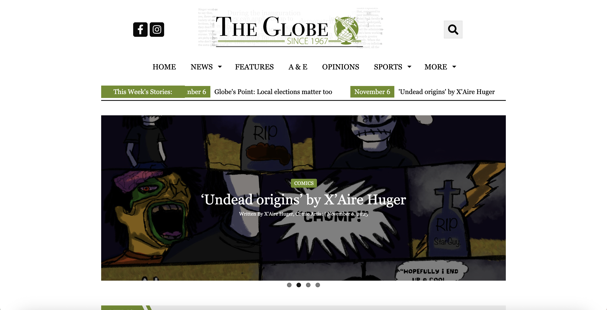
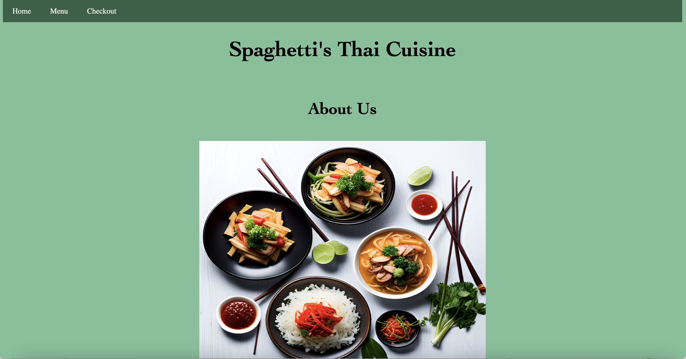
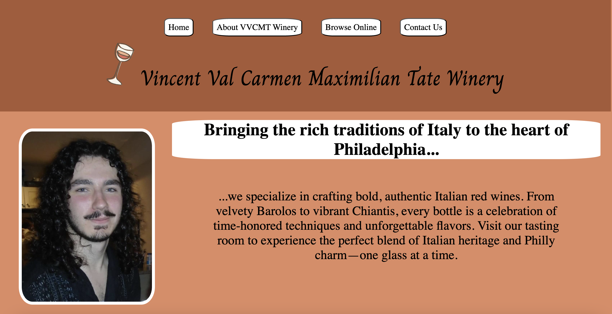
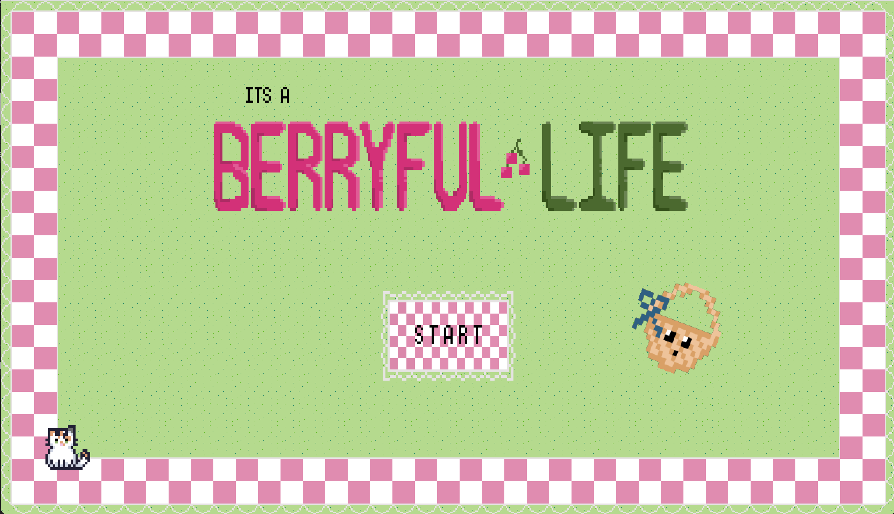
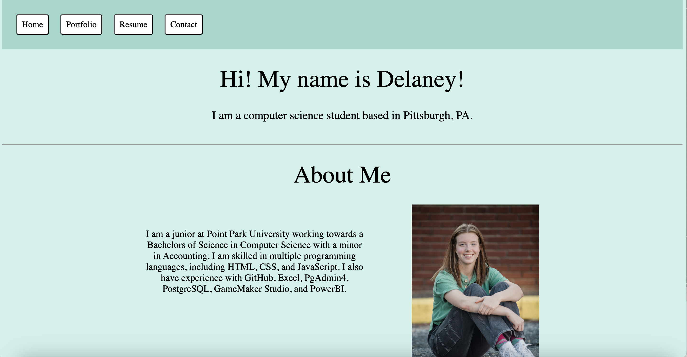

My Projects


Tea Brewing App
HTML, CSS, JavaScript, Electron.js
The Rehoboth Market
WordPress, Elementor, MailChimp, CSS


Closet Website
HTML, CSS, JavaScript, PostgreSQL, Postman, Render
The Globe
WordPress, SNO Sites, CSS


Thai Restaurant
HTML, CSS, JavaScript, Netlify
Winery Website
HTML, CSS, JavaScript, Netlify


Berryful Life
GameMaker Studio, Aseprite, C#
This Website
HTML, CSS, JavaScript, Netlify
Relevant Courses
CMPS 160 - Databases
- This Database course surveys topics in database systems. The course emphasizes the effective use of database systems. Topics include access methods, data models, query languages, database design, query optimization, concurrency control, recovery, security, integrity, client-server architecture, and distributed database systems. Hands-on use will be
a key part of the course.
- Worked with: MySQLWorkbench
CMPS 161 - Networking and Security
- This course introduces basic networking and security concepts. It serves as a precursor to the more advanced and
specialized networking and security courses. Coverage of topics focuses on identifying and understanding the nomenclature
of hardware and software use in modern networks.
- Worked with: Wireshark
CMPS 162 - Introduction to Programming
- This course introduces basic programming concepts. Hands on programming will be a key part of the course. The
course is designed to teach and reinforce basic programming techniques and strategies.
- Worked with: HTMl, JavaScript, CSS, and Visual Studio Code
CMPS 163 - Business Analytics
- This course will provide you with concepts and tools to utilize data for making informed business decisions. We will
start with the raw data and work our way to conclusions and examine all the intermediate steps in detail. Topics such as
data collection, model selection, built-in assumptions, and uncertainty will be at the core of the course. You will familiarize
yourself with tools to apply these concepts in practice.
- Worked with: Excel
CMPS 260 - Data Structures
- In this course fundamental data structures will be explored that are indispensable when programming. Some major
areas are objects, lists, arrays, stacks, queues, and more. Tradeoffs in terms of computational complexity and operations on
these data structures are also discussed.
- Worked with: Visual Studio Code
CMPS 261 - Server Management
- In this course, students will learn how to administer a server. This ranges from installing an operating system, remotely
installing software packages through a package manager, configuring the system, managing security and encryption, backups, to shell scripting. A big component of this course is lab work.
- Worked with: UTM, FreeBSD, Unix, and Terminal
CMPS 262 - Advanced Programming
- This course continues where CMPS 162 and CMPS 260 leave off. The focus will be on problem solving but with a
much higher difficulty level. The students will be required to write programs that involve multiple units of organization,
e.g., classes. Several advanced algorithms will be discussed and should be implemented by the students.
- Worked with: HTML, JavaScript, CSS, TypeScript, Bootstrap, Visual Studio Code, Netlify, Postman, PostgreSQL, PgAdmin4, and Render
CMPS 361 - Web Application Development
- This course will provide a foundation in several facets of establishing and maintaining a website. This includes
the latest advances in client side as well as server side technologies. The goal is to have students design,
implement, and run advanced web applications. It will also cover in some detail the protocols required for web
development.
- Worked with: PHP, HTML, JavaScript, CSS, Visual Studio Code, Postman, PostgreSQL, and PgAdmin4
CMPS 363 - Digital Security
- This class will provide an overview of computer security. The concepts of security in the context of the digital
world will be discussed. The nuts and bolts of threat prevention, detection and removal are discussed. The student
will be required to use a lab environment to simulate troubleshooting, preventing and fixing problems.
- Worked with: Amazon Web Services, OWASP Juice Shop Project, Snort, and Virtual Machine Windows 19